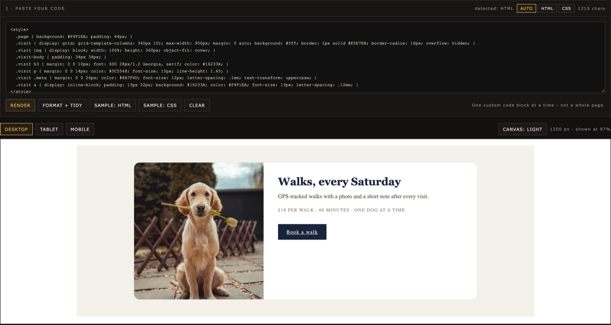

CSS Code Editor
Paste a Squarespace custom code block or a plain CSS snippet and see it rendered before you touch anything. Edit text, image URLs and buttons, or every CSS declaration, then copy the finished code straight back.
Edit Custom CSSFREE BROWSER TOOLS
Edit a section. Fix an image. Clean up code. Calculate a ratio. CardKit gives you focused tools for common website tasks without accounts, dashboards or complicated setup.
No signup · Browser-based · Built for practical website work

CSS Code Editor · paste, render, copy backEach CardKit tool is designed around a single practical task. Open the tool, make the change, export the result and continue working.
Paste a Squarespace custom code block or a plain CSS snippet and see it rendered before you touch anything. Edit text, image URLs and buttons, or every CSS declaration, then copy the finished code straight back.
Edit Custom CSSAdd clean space around an image and prepare it for square, portrait or landscape layouts without awkward cropping.
Open Image PadderResize an image to exact pixel dimensions while keeping control of its proportions and output.
Resize an ImageConvert dimensions, preserve proportions and quickly calculate matching width or height values.
Calculate a RatioClean and format HTML snippets before pasting them back into a website, template or code block.
Clean HTMLMany small website changes do not need a complete design platform or development environment. Sometimes you only need to replace an image, adjust a section, resize a file or clean up a block of HTML. CardKit focuses on those small jobs.
Open the tool and start working.
Each tool solves one specific problem instead of trying to become another website builder.
Most processing happens directly in your browser.
Copy or export your result and take it back to the platform you already use.
CardKit is useful for:
You do not need to be a developer to make a small, controlled change.
Paste code, open an image or enter your dimensions.
Use the visual controls instead of searching through a complicated interface.
Preview the output before you use it.
Copy, download or export the result and continue working in your original platform.
CardKit is designed to keep unnecessary data handling to a minimum. Tools that can run locally in the browser do so whenever practical.
For example, the CSS Code Editor processes the HTML you paste inside your browser and does not send that code to CardKit servers. Some previews may still request external resources referenced by the code, such as images, fonts or third-party libraries.
CardKit guides explain common website-editing tasks in plain language, including what to change, what not to touch and when a small browser tool is enough.
Learn how to isolate a section, make controlled changes and avoid accidentally changing the rest of the page.
A practical guide to the three edits template buyers make most often.
A workflow for making small content changes inside custom HTML sections without rebuilding them.
Prepare consistent product images for digital-product listings using reusable image dimensions and canvas ratios.
Yes. The core tools on CardKit are available to use without creating an account.
No. CardKit tools run in a modern web browser.
The CSS Code Editor processes pasted HTML locally in your browser and does not upload that code to CardKit servers.
External resources referenced by the code, such as images, fonts or libraries, may still be requested from their original providers.
No. Etsy template buyers are one common use case, but CardKit is designed for website templates, custom HTML, Squarespace code sections and other practical web-editing workflows.
No. CardKit is an independent product.
No. These are focused utilities, not a full website development environment. Always keep a backup of your original files or code before making changes.
Choose a tool, make the change and get back to your project.